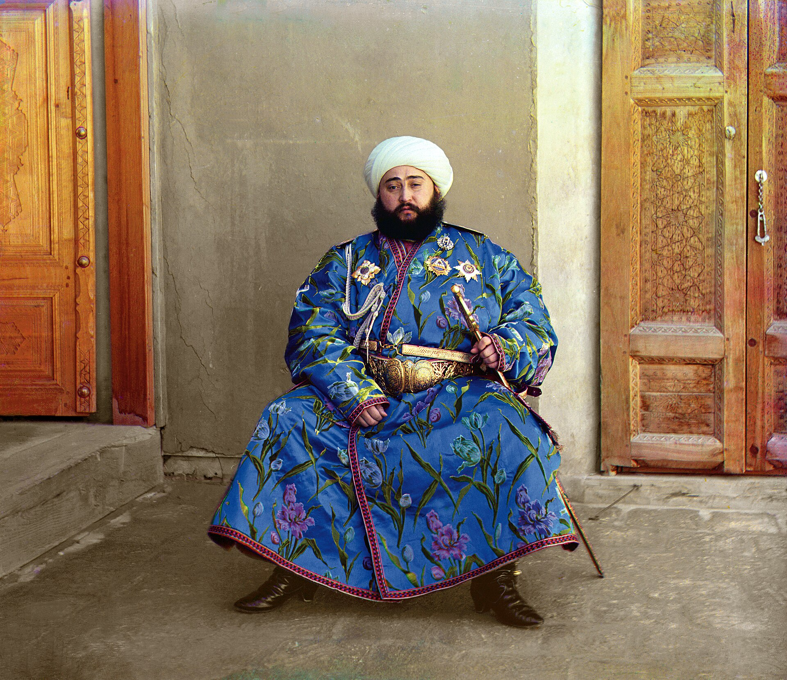

The First Wave of the Uzbek Diaspora: Emigration in 1917–1934
The political-refugee wave that followed the Russian Revolution, the fall of Bukhara and Khiva, the Basmachi movement and forced collectivization — a factual history of how the Uzbek and Turkestani diaspora took shape.

When people speak of today's Uzbek diaspora, they usually mean the labor migration that followed 1991. But the first chapter of that history began much earlier — after the revolution of 1917. This was a political, not economic, wave of emigration that carried people fleeing war, persecution and forced collectivization to the south and west.
Revolution and the fall of the states
On 27 November 1917 the Turkestan (Kokand) Autonomy was proclaimed in Kokand, but it was crushed by the Bolsheviks: its government was overthrown on 18 February 1918 and Kokand fell on 22 February. In February 1920 the Khanate of Khiva was abolished and the Khorezm People's Soviet Republic was established.
On 28 August 1920 the Red Army under Mikhail Frunze attacked Bukhara; the Emir of Bukhara, Sayyid Alim Khan, fled first to Eastern Bukhara and then to Kabul, Afghanistan. On 8 October 1920 the Bukharan People's Soviet Republic was proclaimed. These events unfolded alongside the Basmachi resistance movement, which lasted roughly from 1916 to 1934.
The waves of emigration
After the fall of Bukhara, and during the Basmachi war and the consolidation of Soviet power, Central Asians began leaving for abroad. The main destination was Afghanistan (also China, Iran and India). Emigration peaked in 1929–1932, coinciding with forced collectivization and intensifying anti-religious campaigns.
Historians estimate that roughly half a million Central Asians left their homeland in this period; one detailed estimate puts the figure at about 480,000 by 1926. In Afghanistan the migrants settled along the northern frontier, in centers such as Andkhoy. In the early 1930s, some refugees moved on via the pilgrimage to Saudi Arabia, settling in Mecca and Medina.
Key figures
- Enver Pasha — joined the Basmachi and was killed on 4 August 1922 in a clash with the Red Army
- Ibrahim Bek — a Laqay Basmachi leader; fled to Afghanistan and led cross-border raids; captured and executed in 1931
- Mustafa Chokay — a leader of the Turkestan Autonomy; lived in exile in France from 1921 and led Turkestani émigré politics; died in Berlin on 27 December 1941
How the diaspora took shape
Émigré communities coalesced mainly in three centers: northern Afghanistan (Turkestani “Bukharan” merchants and refugees), Saudi Arabia (around Mecca and Medina, received as Muslims fleeing communism) and Turkey. Political exiles such as Chokay carried a “Turkestani / Uzbek” émigré identity in Europe. Today the Uzbek community in Turkey is estimated at around 70,000 (a present-day figure, not a 1930s one).
How it differs from the modern wave
This first wave was a political flight (1918–1934) caused by war, persecution and collectivization, directed mainly south and west (Afghanistan, Saudi Arabia, Turkey, Europe). It is fundamentally different from the economic labor migration that followed independence in 1991: the latter is far larger, aimed mainly at Russia, and driven by unemployment and remittances.
A note on sources
Some figures (including the total number of émigrés) differ across sources and rest on Soviet-era data; they are therefore given as approximate. The dates have been verified against two or more reputable sources.